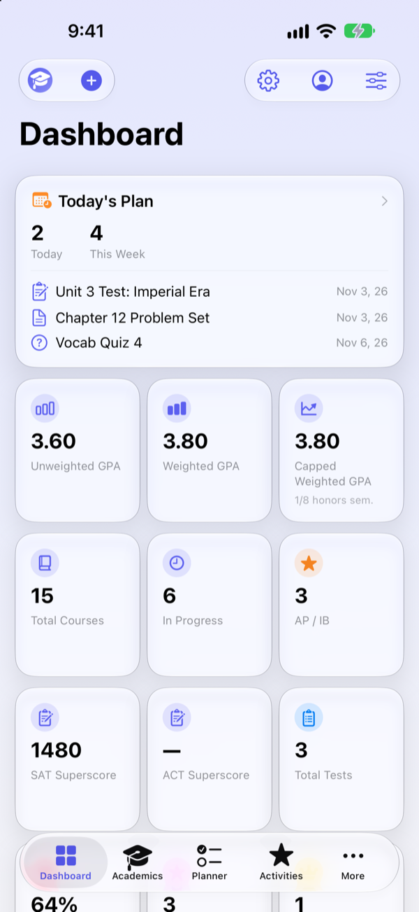
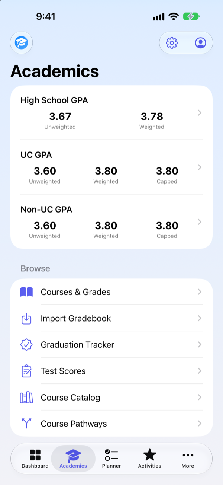
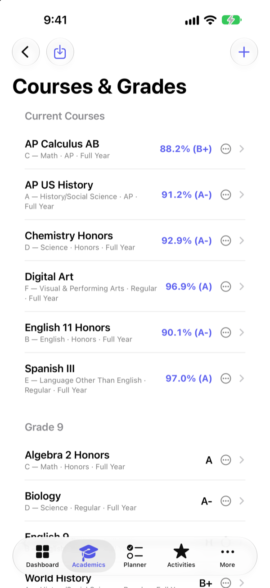
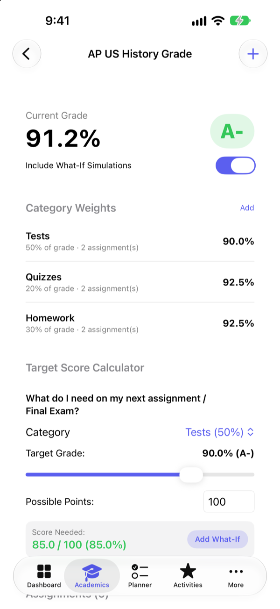
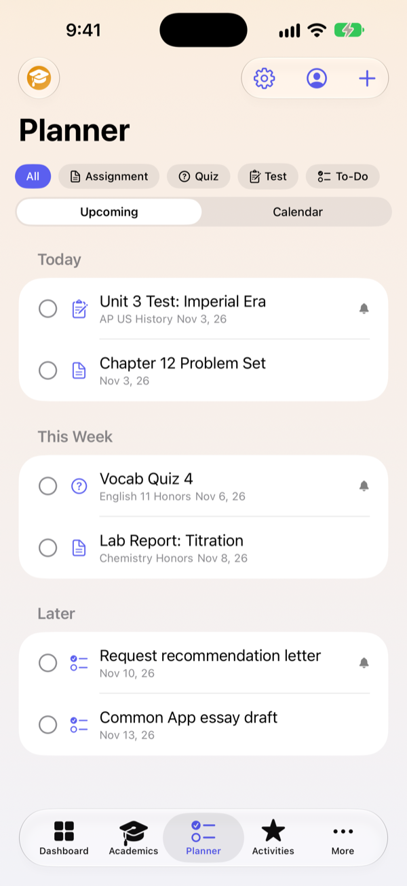
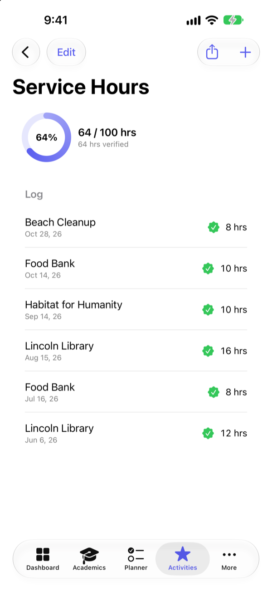

Live grades and What-If
See every course's percentage as scores come in. Add weighted categories like Tests and Homework, then find out exactly what you need on the next exam.
One calm place for grades, GPA, deadlines, activities, and your college list. Built for high school students and the families who help them. Everything stays on your device.
For iPhone and iPad. No account needed.
Stop switching between portals, spreadsheets, and sticky notes.
See every course's percentage as scores come in. Add weighted categories like Tests and Homework, then find out exactly what you need on the next exam.
High School GPA across all four years, UC GPA with the real A-G rules, and a Non-UC GPA for CSU and other colleges. Show only the ones you need.
Assignments, quizzes, tests, and to-dos in an upcoming list or a calendar. Filter, search, and get a notification before anything is due.
Log clubs, sports, jobs, and awards in a Common App style format. Track service hours toward your goal and share the log with a counselor.
Label schools reach, target, or safety, see whether your list is top-heavy, compare schools side by side, and catch early-decision conflicts.
Track plans, deadlines, and checklists that adapt to each application type, plus FAFSA and financial aid deadlines and notes.
Set up once, then it keeps you on track all year.
Add your courses or import a grade export from your school's portal. Scores and GPAs update automatically.
Put deadlines in the planner, turn on reminders, and see what's due today and this week at a glance.
Build a balanced college list, follow each application's checklist, and keep aid deadlines in view.
Screens from the app, shown with sample data for a fictional student.






Grades and college plans are personal. My HS Hub is built so they never have to leave your phone.
All data is stored locally on your iPhone or iPad. The app doesn't send it to us or to anyone else.
There's nothing to sign up for, no advertising, no analytics, and no third-party tracking in the app.
Save a backup file whenever you like and restore it on another device. You decide where it goes. Read the privacy policy.
No. You export your grades from your school's portal yourself (most offer a CSV export) and import the file. Your portal login never touches the app. My HS Hub is independent and is not affiliated with Infinite Campus or any school or district.
It follows the University of California's published method: A-G courses from the summer after 9th grade through the summer after 11th grade, plus/minus ignored, and honors points capped at 8 semesters. Treat the numbers as estimates and always confirm with your counselor and the colleges you apply to.
It uses the same grades and course window with the broader honors-course eligibility that CSU and many other colleges apply, so you can compare it with your UC number.
Yes. Each student gets a separate profile with their own courses, activities, and college plans, and you can switch between profiles at any time.
iPhone and iPad.
Save a backup file from Settings, move it to your new device with AirDrop or Files, and restore it from Settings. Your data comes with you.
My HS Hub is now available for iPhone and iPad. Try it free for 7 days — no account needed.
Download on theApp Store Get Support